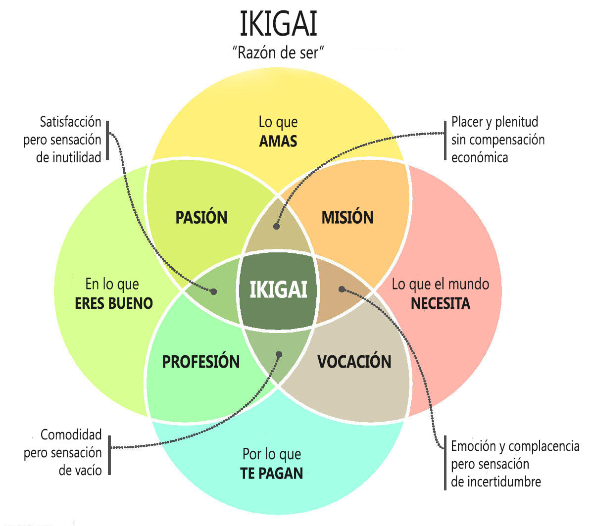

Wondering About Being An Actuary
Table of Contents
- 1. Why I Think I’m Better Off Being An Actuary Instead Of A Software Engineer Or Code Monkey (2023 May)
- 2. List Of Reasons Why You Thought You Wanted To Be A Software Engineer, from 14-23 Years Old
- 3. How Would Being An Actuary Fit Into My Planned Lifestyle?
- 4. General Potential Disadvantages Of Being An Actuary:
- 5. What Motivates Me?
- 6. My Previously Envisioned Dream Careers
- 7. Other Questions
1. Why I Think I’m Better Off Being An Actuary Instead Of A Software Engineer Or Code Monkey (2023 May)
- i
- i
- I changed my major from computer science to mathematics in late 2018 (at 19 years old) because I couldn’t keep up with the programming projects in my computer science classes, I enjoyed the mathematics classes more, and I got better grades in the math classes too. By contrast, most of the other CS majors got better grades in their CS courses than their math courses.
- If I’m better at mathematics than most people (I have a strong comparative advantage at doing it) and I enjoy it more than writing programs and thinking about CS, then it’s probably more practical to get a job that revolves around math instead.
- Actuaries tend to have better work-life balance, higher job satisfaction, and better job security during recessions than software developers do.
- This is really important if I am interested in having family time, and time to think and write about philosophy and any interesting knowledge that my mind craves.
- I think that I would rather do analytic work instead where I actually get to think and make big decisions that affect the direction that the company takes.
- In which case, becoming a CAS actuary might be the better choice, since I’ve anecdotally heard that their higher than average salaries (compared to SOA actuaries) could be arguably attributed to how they arguably play a bigger and more decisive role in being involved with the company’s decision making and determining its profits.
- Knowing that my job plays an important role in insurance (and thus also the world’s economy and the general functioning of society) is much more appealing to me than working a job where I could be mindless drone who codes proprietary software that I have little interest in, just to compete and get an edge over other companies.
- I think that it would be very fun to be paid to do calculus, linear algebra, differential equations, statistics, and probability distributions for my job.
- i
- Some jobs will literally pay for actuaries to study for their actuarial exams. It’s very appealing and attractive for me to choose a job that literally pays me to learn more mathematics (and financial/economics related stuff). Learning new things is my favorite hobby to do.
- It also gives me a strong incentive to study the Black-Scholes stochastic partial differential equations for making better investments, which I really want to learn. I will definitely be closer to understanding them on my own if I approach them familiarizing myself with the content from exams P, FM, and IFM.
- The financial knowledge that I attain from studying for the exams and doing actuarial tasks may enable me to make better, wiser investments on the stock market, thus increasing my income, retirement funds, and ability to be a breadwinner for my children and family.
- The financial knowledge that I attain from studying for the exams and doing actuarial tasks may enable me to write more original blog posts and content for my website, since it would make me more knowledgeable about insurance, economics, mathematics, and statistics.
- Being an actuary might make it easier for me to attend graduate school in statistics, mathematics, physics, philosophy, economics?, etc, since my mind would be trained to do math, instead of learning data structures, algorithms, and trivial programming APIs, libraries, etc.
- i
- i
- I am really good at studying for exams and learning new information, compared to learning how to write algorithms and very specific, sequential tasks.
- Even in the case that I somehow don’t enjoy the work that I do, it would still make more sense to do it anyway, compared to working as a programmer / software engineer, if I’m simply better at mathematics and finances than computer science.
- i
- i
The ikigai diagram, and how it relates to the various jobs/activities that I could do (for a living).

How feasible would it be for me to make a living off of being a notable youtuber or content creator?
https://en.wikipedia.org/wiki/Workplace_politics
I am very Black-pilled about the job market and interview process for programming and software development related jobs. This probably isn’t much to worry about his son is a good programmer but I’m not a good program at mainly because I don’t even enjoy programming.
My identity as an actuary, versus my former identity as a future computer scientist
Personally, since I have decided that my purpose in life should be to raise a family with as many children as I can support, this has changed my view on the kind of job that I should have. I don’t necessarily need to have a job that will change the world, but I can do that, instead by spreading my ideas and raising my children, who will also hopefully too many great things to change this world in favor of the value system, that I have decided to affirm.
Since many software engineering jobs have systems where programmers respond to ticket request for new features to be added to the already existing software, this would be very similar to my current website where I have a list of dozens of improvements that I want to add to the website, but I don’t have the time to implement everything as a single person.
I honestly probably have about as much interest in computer science / programming now as I do for being an engineer or a scientist. Which is to say that --------–—.
For some reason, I’m able to notice and figure out stuff like this, but I don’t think that I could ever motivate myself enough to program something like it. After years of trying and fumbling, programming just doesn’t seem to be my cup of tea, even though I’m good at many skills that are related to it.
Reasons why I’m certain that I would rather be an actuary, compared to other jobs that I could theoretically work instead.
Reasons why I don’t want to work in Academia:
- Most research is fake, and a lot of it is just a status game.
- Most of my time would be spent teaching and grading papers, not researching.
- It would pay a lower salary than being an actuary or something else.
- The odds of gaining a very strong reputation as one of society’s greatest intellectuals is very low, especially if I decide to speak the truth, instead of saying things that fit the status quo and popular opinion.
- It doesn’t have good job security, and it’s very difficult to get tenure.
- It would be much more stressful.
1.1. Pros Of Being An Actuary
- If it’s best that I move from city to city to boost my salary, this will make it easier for me to donate sperm to multiple different cities.
- i
- i
- i
- I could still do programming as a side hobby, but this time, it would be specifically focused on doing projects that I am passionate about creating (e.g. a program for modeling phonotactics, python bot for processing spreadsheet data and automating the creation and (improved) editing of wiktionary/wikipedia entries, debate software, Emacs Lisp?).
- Since being an actuary will require working with data, and since the primary advantage of Lisp is its ability to blend code and data together, being an actuary may give me a great excuse to learn Lisp in further detail, whether that be to write programs that I’ve been dying to write in Emacs, or to write better programs related to my job, instead of dreaded Visual Basic (VBA).
- There would still be ways to integrate using Emacs into my actuarial work.
- i
- i
- Another (bonus) benefit to me choosing to be an actuary instead of a programmer is that the frogstar B discord server already has a lot of people in at her work as software engineers, so it will probably benefit our intellectual movement if we have more people who work in different fields, including someone who will be knowledgeable about insurance, statistics, and financial related stuff to help increase the variety of conversation, topics, and knowledge flowing within online community.
1.2. Reasons Why I Don’t Want To Be A Software Engineer Anymore
- Most jobs only pay programmers to write proprietary software, so more often than not, I would have to make a living by writing proprietary software.
- i
- i
- i
- i
- Many job interviews require the candidates to dredge through completing repeated Leet Code problems. These types of questions and job interviews are pretty brutal, especially if you don’t enjoy writing writing algorithms in the first place. Another problem is that
- Although it has a much larger job market, it’s also a much more competitive and cut-throat one. It’s not unheard of for people to have to do dozens or even hundreds of job applications and interviews, just to get their foot in the door.
- I wouldn’t necessarily be programming stuff that I want to program. Instead, I would be programming whatever my boss assigns me to do.
- In other cases, I would just be debugging and fixing software issues from bug reports or ticket issues. In fact, it’s said that most software developers spend ~80% of their time debugging, so if I had debugging especially, then perhaps that would actually be a very undesirable job for me to do.
- I doubt that I would be able to enjoy what I’m doing if I’m not passionate about the work that I’m doing and/or I don’t believe that it would be making a positive difference in the world that aligns well with my worldview.
2. List Of Reasons Why You Thought You Wanted To Be A Software Engineer, from 14-23 Years Old
- Computer science was described to me as “problem solving”, and I love solving problems (and still do), so I thought that I’d love it and would be a natural at it.
- It seemed really exciting to know that I could write my own computer programs and watch the computer execute them exactly as told.
- I knew that it would be a good, well-paying career, especially for someone with a personality similar to mine.
- It seemed really appealing to think that someone could theoretically have nothing more than a computer (and a smart brain) and start making lots of money if they made one awesome app that everybody really liked enough to buy.
- Although I was intimidated by computers before I had to start using them everyday during high school, I really started to enjoy them when I was introduced to computer games, Microsoft Office products, programs, etc, and even different operating systems, like Ubuntu and all the other Linux-based operating systems.
- Since there were many obstacles to me learning how to program and since I always like to have everything be “just right” before doing stuff, I always assumed that if only I could just overcome all the barriers, I could start learning programming really quickly, and start working as a software developer.
- I’m the kind of person who prefers to use Emacs, Linux, Colemak, and privacy-focused / alternative / FOSS software. I even run my own custom-designed website that I wrote and designed almost entirely by myself.
- I couldn’t fathom how someone could enjoy to be so geeky and autistic with his computer, and still just not want to be a programmer.
- Since my other major in college was linguistics, I thought that I would be really well-suited towards being a computational linguist, because a person with a Mathematics BS, a Linguistics BA, and a CS minor would probably have near-perfect credentials for being a computational linguist, right?
- Countering the denial of biological realism in algorithms and Artificial Intelligence.
- i
- There are many unique and original programs that I want to write/code and/or wish existed. I thought that it would be very fitting if I was the one to create them myself.
- With some of my software projects, I envisioned that they could take off and become the basis for creating a new tech startup where I take the lead as the CEO.
3. How Would Being An Actuary Fit Into My Planned Lifestyle?
- IMPORTANT QUESTION: If I decide to become an actuary, how many months and/or years would it take to study for the actuarial exams and pass them?
- i
- i
- If it’s best that I move from city to city to boost my salary, this will make it easier for me to donate sperm to multiple different cities.
- i
- i
- i
- i
- i
4. General Potential Disadvantages Of Being An Actuary:
- You’ll have to pass all the exams. They all have passing rates that seem to average at ~40%, and many of the people who do pass are the ones who are taking the exam for their second or third time.
- You’ll have to like working with insurance.
- Office politics and corporate environment, although you’ll be working alone most of the time.
- Some computer programming will be required, although it’ll all be focused around data.
- If you are too obsessed with studying nitty gritty details, then you may not like getting promoted since you’ll be looking at data from a higher level from the company’s perspective.
- You’ll be sitting/standing at desk most of the day.
- My linguistics degree probably won’t be applicable to the work that I do (but I still won’t regret having worked for it).
- However, linguistics isn’t really particularly useful to know in computational linguistics these days, unless one plans to specialize in making computer work well with human languages other than English.
- In which case, this would require that I be fluent in a second language other than English, but the only languages that I have a good shot at for doing that are probably Spanish, French, Mandarin, or Japanese. And I would have to invest a lot of time to become very knowledgeable in those languages in order to obtain reliable job security.
- However, linguistics isn’t really particularly useful to know in computational linguistics these days, unless one plans to specialize in making computer work well with human languages other than English.
- What if AI automates much of the actuarial field that reduces the need for actuaries?
- If it were possible for that to happen, then essentially everybody in society would be facing a midlife crisis in society regarding their job security and secured future (except for software engineers), in which case, the political upheaval would probably be strong enough to motivate everybody receiving UBI.
- I still predict that this is unlikely to happen. General AI is unlikely to become a substitute for human knowledge, even with quantum computing power and increased electricity generation. So it will probably still be necessary for insurance companies to hire actuaries and human brains.
Is it possible that I would’ve been really well-suited to become an actuary or some other professional who specializes in statistics, if:
- I stayed in the MATH 462 probability and statistics class,
- If I majored in statistics (probably would’ve required dropping linguistics major, to avoid burnout), and
- I had my mind set on becoming a statistician and going to graduate school?
5. What Motivates Me?
WHAT IF I INSTEAD THOUGHT OF AN ACTUARY JOB AS “THIS IS WHAT I HAVE TO DO TO GET PAID MONEY, AND THIS IS MY ONLY OPTION” AS MY MOTIVATOR? (KIND OF LIKE HOW I ENJOY HAVING SEX OR IMAGINING HAVING SEX WITH HALEY IF I IMAGINE HER AS MY ONLY POSSIBLE SEX PARTNER.) OR THINKING ABOUT THAT I ONLY HAVE ONE CHOICE, IN A DETERMINISTIC, CAUSE-AND-EFFECT WORLD.
Perhaps I can’t be motivated to program anything that I’m not super passionate about? I think I am almost certainly more motivated to do math about things that I’m not passionate about, compared to programming that I’m not passionate about.
IMPORTANT QUESTION: What motivates me? It seems that I gain motivation when I imagine the end result and how badly I want to do the work necessary for achieving the end result. And it also seems that I can gain motivation to do something by imagining it as my only choice / option for accomplishing a desire/objective. Oddly however, thinking that I have to do something doesn’t motivate as much as thinking that a task is my only option for getting what I want or satisfying my need. This is probably because thinking that I have to do something can make it feel like a chore and/or make the task feel more stressful.
MAYBE HAVING A STRONG, “MUST SAVE THE WORLD” VISION FOR BUILDING MY BELIEF NETWORK AND DEBATE SOFTWARE COULD MOTIVATE ME TO CONTINUE LEARNING HOW TO PROGRAM, EVEN WHEN IT’S TOUGH FOR ME?
6. My Previously Envisioned Dream Careers
my-dream-occupation-through-the-years.txt
DO SOME INTROSPECTION AND WRITE YOUR THOUGHTS ABOUT WHAT YOU PREVIOUSLY ENVISIONED YOUR FUTURE CAREER TO BE; PHD IN LINGUISTICS?
7. Other Questions
To what extent can I exaggerate or lie on my resume to get the job that I want? There are some people who’ve lied on their resumes before who got better positions because of it. And the people who exaggerate/lie on their resumes will have a competitive advantage over those who are have the same level of experience, but don’t lie at all.
What if I decide to be a technical writer and I decided to only become a computer scientist until I was age 30 or after that? I don’t know if I’ll ever become a computer scientist like I had planned, but if I don’t, I’m fine with working my current job until I retire, if I can’t find anything that would be even better. If it is the case that I cannot start screen share as long as I do, and that means that I have to get a job that does not require start screen for so much time each day, then, perhaps I should just bite the bullet, and find a job that doesn’t require staring at a computer screen all day (or at least not strain / wear out my eyes), since I will pay really well, and will hopefully not require start screen for so long.